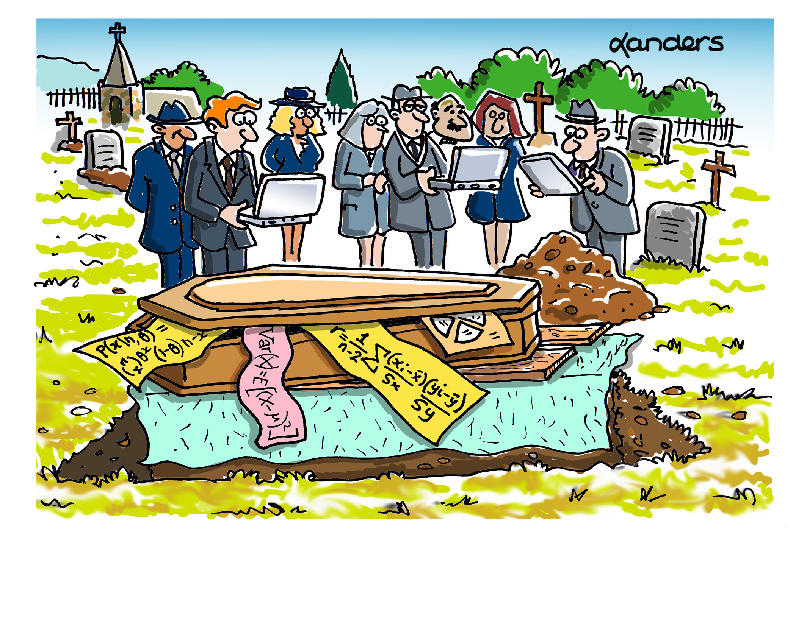

2 Hinweise zu R und quarto
Nach erfolgreichem Abschluss dieses Kapitels sind Sie in der Lage,
- Gründe für den Einsatz von R zu nennen;
- die Unterschiede zwischen R, RStudio und mosaic aufzuführen;
- eine R- oder eine RMarkdown-Datei anzulegen;
- die Unterschiede zwischen diesen zu beschreiben;
- Datensätze zu laden, einfache Befehle einzugeben und manche wichtigen Grundbefehle in R auszuführen.
- RMarkdown-Dokumente zu erstellen und zu bearbeiten;
- die wichtigsten Formatierungen in RMarkdown durchführen und Symbole einfügen zu können;
- R-Code in RMarkdown einfügen und ausführen zu können.
2.1 Warum R
[…] she was also following a wider trend: for many academics […] R is the data-analysis tool of choice.1
1 Tippmann (2015), „Programming tools: Adventures with R“
R ist ein weitverbreitetes und frei verfügbares Statistikprogramm, was viele Vorteile bietet:
- Methoden- und Anwendungsvielfalt (Finance, Marketing, HR, Psychologie, …)2;
- neue Methoden der Datenanalyse werden häufig in R entwickelt (auch Big Data, KI, etc. );
- frei und offen, kostenlos;
- Sie können R im Studium nutzen, zu Hause oder auch am Arbeitsplatz;
- Schnittstellen zu sehr vielen Datenquellen/ -banken (auch Social-Media etc.);
- Erweiterungen u.a. für Microsoft, Oracle, SAP-Produkte, aber auch SPSS, SAS;
- unzählige Nutzer:innen weltweit in Unternehmen und Wissenschaft; 3
- Möglichkeiten für Reporting, Apps, etc.;
- numerische Stabilität und Genauigkeit;
- große Entwickler:innen-Gemeinde mit langerG eschichte (seit 1993): R Konsortium, u. a. IBM, Microsoft, TIPCO, Google, …
2 Siehe z. B. https://cran.r-project.org/web/views/
3 Verbreitung siehe z. B.: http://r4stats.com/articles/popularity/
 Auch wenn die Zeit für das „Einsetzen von Zahlen in Formeln“ und das „Abbildungen zeichnen per Hand“ gekommen ist: Die Ideen und Konzepte leben weiter -– in unseren Computerprogrammen.
https://www.CAUSEweb.org, © J. B. Landers, Bildunterschrift K. Lübke
{kind=link}
Das sind Gründe, warum wir uns für die Nutzung von R entschieden haben.
Welchen Vorteil hat R in Bezug auf die Gütekriterien für Forschung?
2.2 Einrichtung von RStudio (posit Cloud)
In Verbindung mit R (das eigentliche Statistikprogramm) wird RStudio (bzw. in der Cloud-Version posit), ein ebenfalls frei verfügbarer Editor/Integrierte Entwicklungsumgebung (IDE) genutzt. Innerhalb R wird noch mosaic eingesetzt, ein sogenanntes Paket package).
Bildlich gesprochen können Sie sich das so vorstellen:
- Statistik ist das Auto, mit dem der Weg von der Forschungsfrage zur vorläufigen Antwort bestritten werden kann.
- R ist ein Motor, der das Auto antreiben kann.
- RStudio Desktop bzw. posit (Cloud-Version) ist das Cockpit, mit dem der Motor gesteuert werden kann.
mosaicist eine Zusatzausstattung, um die Motorsteuerung zu vereinfachen
Spätestens jetzt sollten Sie R und die Zusatzprogramme installiert haben4 oder den Zugang über die posit-Cloud eingerichtet haben.
4 Eine Installationsanleitung finden Sie hier: https://rawgit.com/luebby/Datenanalyse-mit-R/master/Installation/Install.html
Innerhalb von RStudio bzw. posit in der Cloud-Version arbeiten wir mit einem sogenannten Projekt. Damit ist sichergestellt, dass wir alle das gleiche sehen und die gleichen Dateien etc. zur Verfügung haben. Für die Übungsaufgaben in diesen Unterlagen und das Mitmachen gibt es ein eigenes Projekt: QDmR, in der Veranstaltung ist es dann ein anderes – Ihre Dozent:in teilt Ihnen mit, wie Sie es nutzen können.
Alles installiert? Oder posit-Cloud-Zugang eingerichtet? Dann können wir loslegen.
Hier gibt es zwei Möglichkeiten:
Sie arbeiten lokal
Laden Sie das Projekt (hier QDmR5>) herunter und entzippen Sie es, in dem Sie das gezippte Verzeichnis in ein Verzeichnis Ihrer Wahl ziehen (?fig-XXX).
5 Download des Beispielprojekts: <https://www.dropbox.com/s/io0612okaez3dnb/QDmR.zip?dl=0
Wechseln Sie in das entzippte Verzeichnis, hier QDmR (?fig-XXY), und doppelklicken Sie auf die gleichnamige Projektdatei (in ?fig-XXZ markiert).
Wenn Sie RStudio schließen und das nächste Mal starten, wird das Projekt automatisch wieder geladen. Sie erkennen das in RStudio oben rechts (in ?fig-XYY markiert).
Sie arbeiten in der Cloud
In der posit-Cloud-Version startet das Projekt automatisch durch Aufruf auf dem Link, denn sie in der Veranstaltung bekommen haben. Wichtig, Sie müssen das Projekt noch als permanente Kopie in Ihrem eigenen Workspace ablegen. Klicken Sie dazu hier auf Save a Permanent Copy (?fig-XYX)
Sonst fehlen Ihnen beim nächsten Mal die Sachen, die Sie gemacht haben.
Beim nächsten Login in posit-Cloud wird das Projekt automatisch aufgerufen bzw. Sie bekommen eine Liste, aus der Sie das Projekt wieder aufrufen können (?fig-XYZ).
Denken Sie daran, das Verzeichnis, der Projektname und der dazugehörige Link in posit-Cloud, auf die hier im Text verwiesen wurde, variieren in der Umsetzung in Ihrer Vorlesung.
Verzweigung Ende – jetzt geht es wieder für alle gemeinsam weiter
Sobald Sie RStudio oder posit** gestartet haben, erscheinen drei oder vier Fenster, ähnlich wie in ?fig-YYY. Hier wird der Aufbau von RStudio bzw. posit gezeigt, dem Editor, mit dem wir in der nächsten Zeit viel arbeiten werden.
Links oben finden Sie das Fenster, in dem die R- oder quarto-Skripte geöffnet und bearbeitet werden. Rechts oben werden die Umgebungsvariablen (Environment, dazu später mehr) und die Befehlshistorie (History) angezeigt. Links unten ist die R-Console, dort werden die R-Befehle ausgeführt und die Ergebnisse angezeigt. Rechts unten sehen Sie die Dateien (Files), also ähnlich wie ein Datei-Explorer. Auch werden hier die Grafiken (Plots) angezeigt, die mit R erzeugt werden. Weiterhin finden Sie unter Packages die installierten Pakete und bei Help wird die Hilfe angezeigt.
Bei den Dateien finden Sie Beispiel.R und Beispiel.qmd. Öffnen Sie mit einem Klick zunächste die R-Datei.
In Abbildung 2.8 sehen Sie in der ersten Zeile # Das ist ein Beispiel-R-Skript. Das ist ein Kommentar.
Kommentare in R beginnen immer mit dem Doppelkreuz #.
Der erste Befehl kommt in Zeile vier `library(mosaic)``
Sie sehen unterschiedliche Farben. Kommentare werden mit # eingeleitet und in grün angezeigt. Der eigentliche Befehl wird in blau angezeigt.6
6 Sie können das Farbschema auch ändern.
Sobald Sie etwas geändert haben, wird hinter dem Dateinamen ein Sternchen angezeigt und die kleine Diskette ausgegraut und in blau dargestellt (?fig-2_9). Durch Drücken darauf können Sie Datei speichern. Aber das kennen Sie ja bestimmt so oder so ähnlich aus anderen Programmen.
Sie können die Datei mit File – Save As auch unter einem anderen Namen speichern. Wie Sie die Datei nennen, ist eigentlich egal. Aber achten Sie darauf, keinen Punkt im Dateinamen zu haben, dann wäre es kein R-Skript mehr.
Beim erstmaligen Speichern kann passieren, dass ein Dialog, wie in ?fig-2_10 gezeigt, erscheint.
Wählen Sie Ihr System default aus (beim Mac ist das UTF-8) und machen das Häkchen bei Set as default encoding for source files an. Wenn Sie OK drücken, kommt später dieses Fenster nicht mehr.